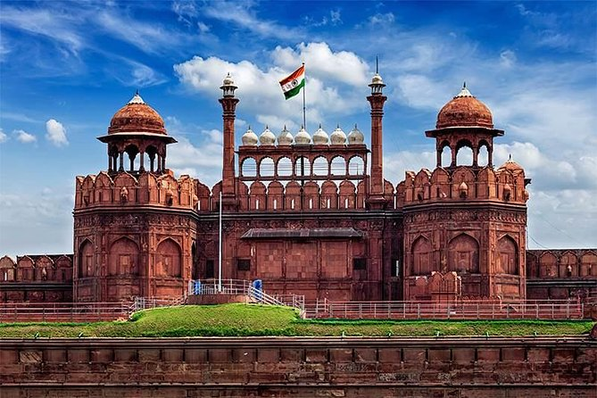

Asia > India > National Capital Territory of Delhi > New Delhi
ABOUT DELHI
Laid out by British architect Edwin Lutyens, the Indian capital is a striking
modern metropolis. A gracious contrast to Old Delhi's winding streets, the grand
avenues and stately buildings of New Delhi are rich with history and culture,
from Gandhi's Delhi home (and the site of his assassination) to the tomb of Humayun,
left to the locals. Negotiate a good price for taxis or travel on the new Delhi Metro.
ESSENTIALS DELHI

~ DO ~
places to see , ways to wander and
signature experience
~ STAY ~
a mixture of the charming , modern and
tried and true
~ EAT ~
can't miss spots to dine , drink
and feast